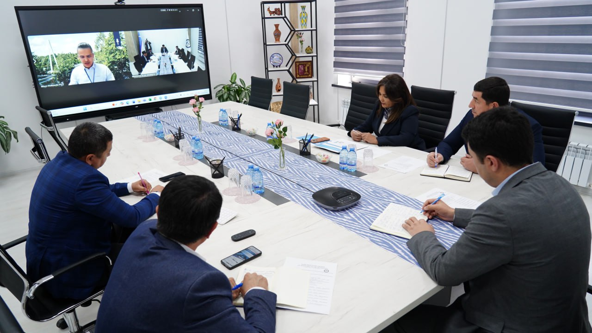

Joriy yilning 21-oktabr kuni Renessans ta’lim universiteti hamda Prime Education Finland o‘rtasida onlayn hamkorlik uchrashuvi o‘tkazildi. Tadbir davomida ikki tomonlama aloqalarni yanada kengaytirish, istiqboldagi hamkorlik yo‘nalishlarini belgilash va ta’lim sohasida ilg‘or tajribalarni qo‘llash masalalari muhokama etildi.
Uchrashuvda 2025-yil 14–15-noyabr kunlari Renessans ta’lim universitetida o‘tkazilishi rejalashtirilgan xalqaro konferensiyada Finlandiya tadqiqotchilarining ishtirok etishi, shuningdek, o‘zbek allomalari merosi bo‘yicha olib borilayotgan ilmiy loyihalarning natijalari muhokama qilindi. Shu bilan birga, qo‘shma ilmiy va ta’lim loyihalarini yo‘lga qo‘yish masalalari ham ko'rib chiqildi.

Bundan tashqari, “Finlandiya ta’lim laboratoriyasi”ni tashkil etish tashabbusi ilgari surildi. Mazkur loyiha ta’lim jarayoniga zamonaviy yondashuvlarni joriy etish, innovatsion metodikalarni keng tatbiq etish hamda talabalar va professor-o‘qituvchilar malakasini oshirishga xizmat qilishi ta’kidlandi.
Shuningdek, qo‘shma ta’lim dasturlarini ishlab chiqish, talabalar almashinuvini yo‘lga qo‘yish, professor-o‘qituvchilar uchun malaka oshirish va stajirovka dasturlarini tashkil etish masalalari yuzasidan kelishuvga erishildi.
Yana bir muhim yo‘nalish sifatida grant loyihalari va qo‘shma ilmiy tadqiqotlarni amalga oshirish istiqbollari ko‘rib chiqildi. Mazkur hamkorlikning yo‘lga qo‘yilishi Renessans ta’lim universitetining xalqaro miqyosdagi nufuzini oshirishga, ta’lim sifati va ilmiy izlanishlarni yanada rivojlantirishga xizmat qilishi qayd etildi.